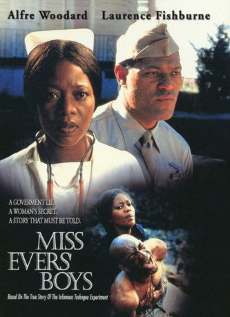
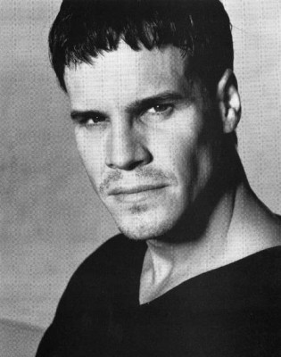
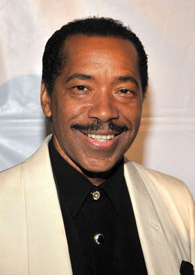
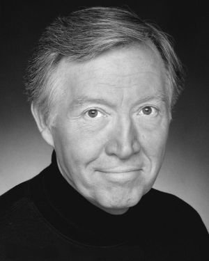

#4538 Miss Evers' Boys - Die Gerechtigkeit siegt
Alternativ: Miss Evers' Boys
Auszeichnungen: 1 GoldenGlobes gewonnen
 
 IMDB-Wertung: 7.2 / 10
IMDB-Wertung: 7.2 / 10  Metascore: 0
Metascore: 0 
Alabama, 1932: In einem der wenigen Krankenhäuser für Afro-Amerikaner, kümmert sich Krankenschwester Eunice Evers gemeinsam mit Dr. Brodus um männliche Syphilis-Kranke. Als die Mittel für die Behandlung zur Neige gehen, wenden sich die Behörden mit einer ethisch zweifelhaften Anfrage an Brodus: Seine Patienten sollen, ohne ihr Wissen, an einer Studie über unbehandelte Syphilis teilnehmen.
Jahr: 1997
Dauer: 113 Minuten
FSK:
Land: USA Studio: HBOTonspuren: DD2.0 - ,
Untertitel:
Auflösung: 1080p (1920x1080) Größe: 4935 MB
Genre: Drama, Krieg
Regisseur: Joseph Sargent
Drehbuch: Catherine Corsini
Soundtrack:
Darsteller:
 Alfre Woodard als Eunice Evers, R.N.
Alfre Woodard als Eunice Evers, R.N. Laurence Fishburne als Caleb Humphries
Laurence Fishburne als Caleb Humphries-  Craig Sheffer als Dr. Douglas
 Joe Morton als Dr. Sam Brodus
Joe Morton als Dr. Sam Brodus-  Obba Babatundé als Willie Johnson
- Thom Gossom Jr. als Ben Washington
 Ossie Davis als Mr. Evers
Ossie Davis als Mr. Evers E.G. Marshall als The Senate Chairman
E.G. Marshall als The Senate Chairman- Peter Stelzer als Senator
- Donzaleigh Abernathy als Nurse Betty
-  Tommy Cresswell als Dr. Larkin
- Judson Vaughn als Dr. Davis
- Benjamin Anderson als Juke-Joint Patron / Hospital Patient , uncredited
- Joshua Lou Friedman als Chairman's Aid , uncredited
- Tina King als Share Cropper , uncredited
- Roberto 'Sanz' Sanchez als Chauffeur Driver , uncredited
- Von Coulter als Hodman Bryan
- Robert Benedetti als Senator
- Larry Black als Dr. Hamilton
- Bill Coates als Old Man
- Gerald F. Brown als Announcer
- Joan Glover als Clinic Nurse
- T.S. Morgan als Patient
- Kiki Shepard als Sadie
- Leon Von Brown als Gillee Dancer
- Andrew David als Gillee Dancer
- Waverly Lucas als Gillee Dancer
- Dereque Whiturs als Gillee Dancer
- Linwood Cherry als Source Musician
- Theodis Ealey als Source Musician
- Jeff Mosier als Source Musician
- Gary Motley als Source Musician
- Bob Nelson als Source Musician
- Neal Starkey als Source Musician
- Sheila Wheat als Source Musician
- Colleen Harrison als Mother of twins , uncredited
- David Reynolds als (uncredited
- Adrian Schmidt als Attorney / Senator's Aide , uncredited
- William Victor Skrabanek als Court Room Reporter , uncredited
Datei: X:\1997\Miss Evers' Boys - Die Gerechtigkeit siegt (1997, FSK, 1920x1080).mkv seit 11.10.2016
Festplatte: HD 1996-2002
 Es gibt insgesamt 83 Filme in der Gruppe '1997'
Es gibt insgesamt 83 Filme in der Gruppe '1997'